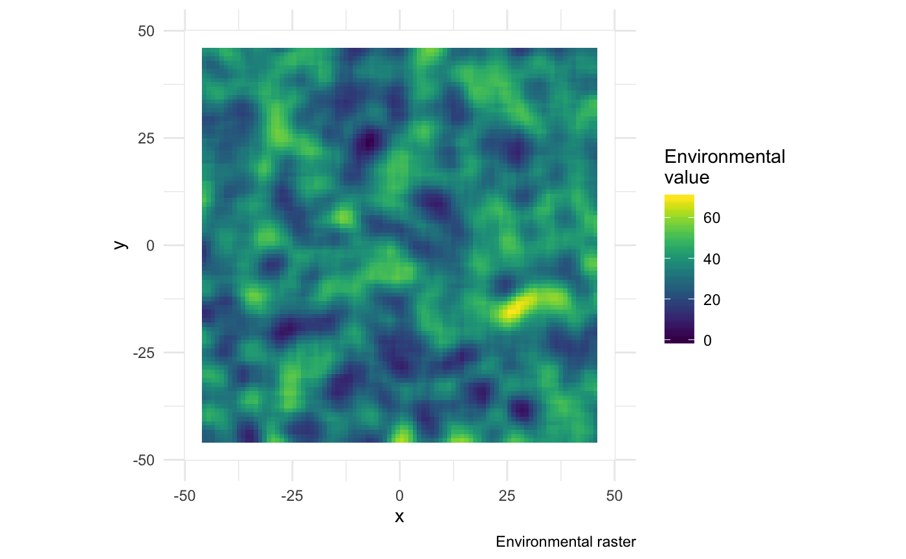
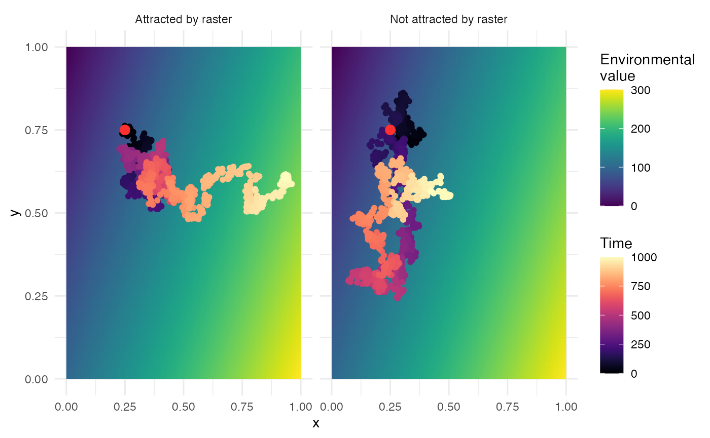
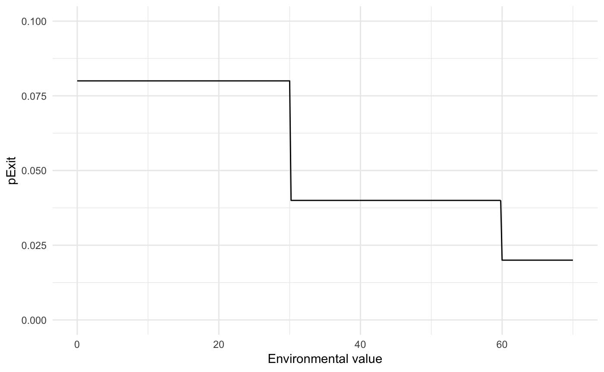
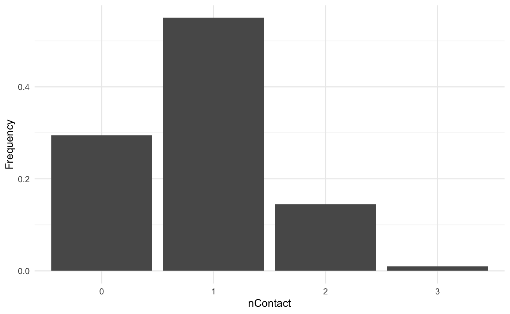
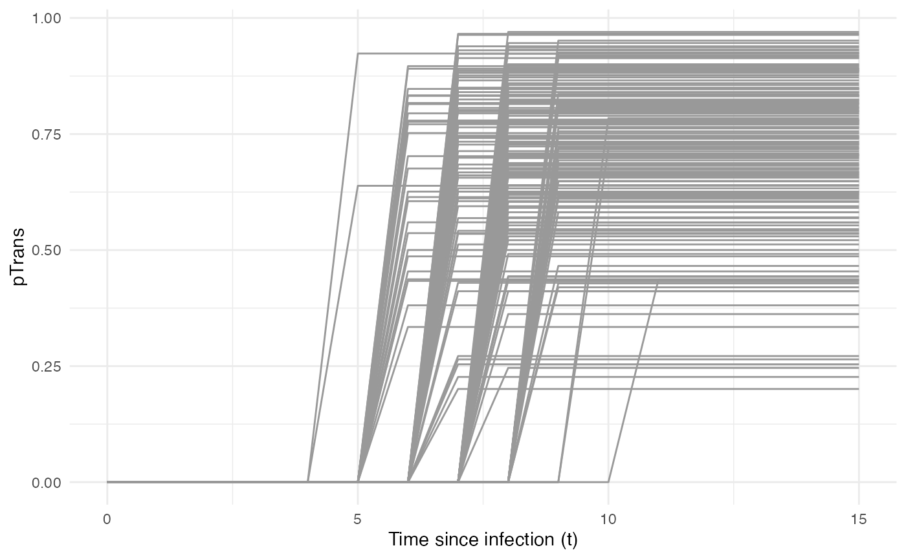
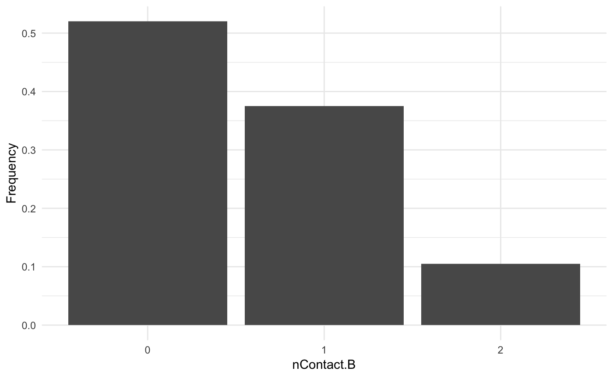
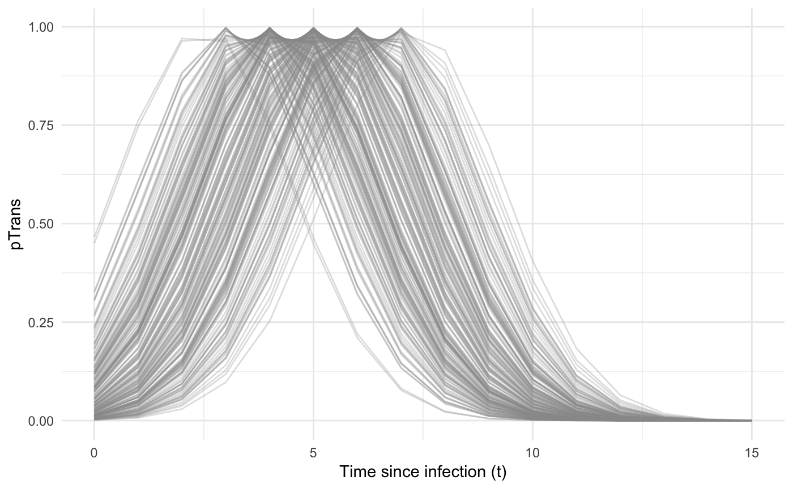

Spread of a pathogen in a continuous space
Sebastian Lequime
2019-07-19
Source:vignettes/continuous.Rmd
continuous.RmdAside from the simple simulation set up, explored in another tutorial, where hosts are “not structured”, nosoi can take into account a population structured either in discrete states or in a continuous space. We will here focus on a continuous space structuration (for the discrete structuration, see this tutorial).
The continuous space is intended to allow the simulation to take place in a geographical context where hosts can move on a map, and may be influenced by heterogeneously distributed variables (environemental for example) on said map. This tutorial will focus on setting up a nosoi simulation for a pathogen whose spread occurs in continuous space.
Structure of the population
Continuous space
In the continuous space, the simulation will take place on a map defined by its coordinates. This map is actually a raster, called structure.raster, that also holds an environmental value of interest that may influence the epidemic process. Areas were hosts cannot move (water, unaccessible areas, etc) must be defined by the value NA.
Here, we will generate a random raster for the purpose of this tutorial, but you can use a “real” world raster and simulate your epidemic on it ( see this example ).
Code used to create the random raster used in this tutorial

Movement kernel
Movements in nosoi are basically described by a random walk (Brownian motion), that can be attracted by the underlying environmental variable (attracted.by.raster). In any case, the movement cannot land into areas out of the raster nor into areas of the raster with no value (NA).
The user provides a core function sdMove that give the standard deviation of this Brownian motion. This function, like the other core functions, can be dependent of time since infection, absolute time of the simulation, location (value of the environmental variable) or individual-based parameters. This standard deviation is in your coordinate space, so the actual distance travelled by the host may actually vary according to your space.
In the case where hosts are attracted by the raster, hosts will tend to go to positions with high environmental values. Internally, once a new position is proposed, its environmental value is extracted and normalized (against the highest environmental value). This normalized number represents its probability of acceptance. Up to 30 draws can be made until one is accepted (by default the 30\(^{th}\) move is always accepted; this value was empirically set to allow enough exploration without being stuck in a time consumming search).
The figure below shows a movement on a simple gradient raster, with or without an attraction (sdMove is a constant fixed at 0.01, time is 1000 units of time, maximum value of the environmental variable is 300). The red point represents the starting position.

Setting up the simulation
The wrapper function nosoiSim requires all the arguments that will be passed down to the simulator, in the case of this tutorial singleContinuous (for “single host, continuous space”). We thus start by providing the options type="single" and popStructure="continuous" to set up the analysis:
This simulation type takes several arguments or options to be able to run, namely:
length.simmax.infectedinit.individualsinit.structurestructure.raster-
pExitwithparam.pExit,timeDep.pExit,diff.pExitandhostCount.pExit -
pMovewithparam.pMove,timeDep.pMove,diff.pMoveandhostCount.pMove -
sdMovewithparam.sdMove,timeDep.sdMove,diff.sdMoveandhostCount.sdMove attracted.by.raster-
nContactwithparam.nContact,timeDep.nContact,diff.nContactandhostCount.nContact -
pTranswithparam.pTrans,timeDep.pTrans,diff.pTransandhostCount.pTrans prefix.host.Aprint.progressprint.step
All the param elements provide individual-level parameters to be taken into account, while the timeDep elements inform the simulator if the “absolute” simulation time should be taken into account. The diff elements inform the simulator if there is a differential probability according to the state the host is currently in, and the hostCount elements inform the simulator if the number of host in each raster cell (based on the environmental raster provided) has to be taken into account. All parameters must be provided, although timeDep, diff and hostCount have default values set to FALSE; if you do not want to use these options, then you do not have to explicitly provide a value.
General parameters
length.sim, max.infected and init.individuals are general parameters that define the simulation. length.sim is the maximum number of time units (e.g. days, months, years, or another time unit of choice) during which the simulation will be run, whereas max.infected is the maximum number of individuals that can be infected during the simulation. init.individuals and init.structure are the “seeding parameters” with which to start the simulation. init.individuals defines the number of individuals (starting at 1, should be an integer) that will start a transmission chain and init.structure their starting location (as a vector of two coordinates, x and y) in the continuous space (has to be the same starting location for all starting individuals). Keep in mind that you will have as many transmission chains as initial individuals, which is equivalent as launching two independent nosoi simulations. The location provided in init.structure should of course be present in the structure.raster.
Here, we will run a simulation starting with 1 individual, for a maximum of 1.000 infected individuals and a maximum time of 300 days.
Core functions
The core functions pExit, pMove, sdMove, nContact and pTrans each follow the same principles to be set up. To accommodate several scenarios, they can be constant, time-dependent (relative time since infection for each individual or “absolute”" time of the simulation), location dependent in the continuous space (value of the environmental variable), or even individually parameterized, to include some stochasticity at the individual-host level. In every case, the function provided, like all other core functions in nosoi, has to be expressed as function of time t, even if time is not used to compute the probability. In case the function uses individual-based parameters, you have to specify a list of functions (called param.pExit, param.pMove, param.sdMove,param.nContact or param.pTrans) ( see Get started ). If no individual-based parameter is used, then they are set to NA.
Keep in mind that
pExit,pMove, andpTranshave to give back a probability (i.e. a number between 0 and 1) whilenContactshould give back a positive natural number (positive integer) andsdMovea positive number.
You can combine the influence of several parameters, such as time since infection, “absolute” time of the simulation, location (in the continuous space), and individual-based parameters within the same function.
nosoican be flexible in what it allows as parameters in your function, but a common general structure should be observed. The argument of the function should be (in that order): (1) time since infectiont(obligatory); (2) “absolute” timeprestime(optional); (3) current statecurrent.in(optional); (4) host count in statehost.count(optional); (5) other individual-based parameter(s), provided inparam.function. If one of the argument is not used (exceptt), then you do not have to provide it and can continue with the next argument.
pExit, param.pExit, timeDep.pExit, diff.pExit and hostCount.pExit
pExit is the first required fundamental parameter and provides a daily probability for a host to leave the simulation (either cured, died, etc.). param.pExit is the list of function need to individually paramterize pExit ( see Get started ). The name of each function in the list has to have the same name as the parameter it is sampling for pExit. timeDep.pExit allows for pExit to be dependent of the “absolute” time of the simulation, to account, for example, for seasonality or other external time related covariates. By default, timeDep.pExit is set to FALSE. diff.pExit allows pExit to be different according to the current environemental value of the location where the host is located. By default, diff.pExit is set to FALSE. hostCount.pExit allows pExit to differ according to the number of hosts currently in a raster cell. By default, hostCount.pExit is set to FALSE. To use hostCount.pExit, diff.pExit has to be set to TRUE too.
pMove, param.pMove, timeDep.pMove, diff.pMove and hostCount.pMove
pMove is the probability (per unit of time) for a host to move on the map. It should not be confused with the distance the host will travel linked to sdMove (see below). param.pMove is the list of function need to individually paramterize pMove ( see Get started ). The name of each function in the list has to have the same name as the parameter it is sampling for pMove. timeDep.pMove allows for pMove to be dependent of the “absolute” time of the simulation, to account, for example, for seasonality or other external time related covariates. By default, timeDep.pMove is set to FALSE. diff.pMove allows pMove to be different according to the current environemental value of the location where the host is located. By default, diff.pMove is set to FALSE. hostCount.pMove allows pMove to differ according to the number of hosts currently in a raster cell. By default, hostCount.pMove is set to FALSE. To use hostCount.pMove, diff.pMove has to be set to TRUE too.
sdMove, param.sdMove, timeDep.sdMove, diff.sdMove and hostCount.sdMove
sdMove represents the standard deviation of the Brownian motion movement when a host undergo a move (set by pMove). param.sdMove is the list of function need to individually paramterize sdMove ( see Get started ). The name of each function in the list has to have the same name as the parameter it is sampling for sdMove. timeDep.sdMove allows for sdMove to be dependent of the “absolute” time of the simulation, to account, for example, for seasonality or other external time related covariates. By default, timeDep.sdMove is set to FALSE. diff.sdMove allows sdMove to be different according to the current environemental value of the location where the host is located. By default, diff.sdMove is set to FALSE. hostCount.sdMove allows sdMove to differ according to the number of hosts currently in a raster cell. By default, hostCount.sdMove is set to FALSE. To use hostCount.sdMove, diff.sdMove has to be set to TRUE too.
nContact, param.nContact, timeDep.nContact, diff.nContact and hostCount.nContact
nContact represents the number (a positive integer) of potentially infectious contacts an infected hosts can encounter per unit of time. At each time point, a number of contacts will be determined for each active host in the simulation. The number of contacts (i.e. the output of your function) has to be an integer and can be set to zero. param.nContact is the list of function need to individually paramterize nContact ( see Get started ). The name of each function in the list has to have the same name as the parameter it is sampling for nContact. timeDep.nContact allows for nContact to be dependent of the “absolute” time of the simulation, to account, for example, for seasonality or other external time related covariates. By default, timeDep.nContact is set to FALSE. diff.nContact allows nContact to be different according to the current environemental value of the location where the host is located. By default, diff.nContact is set to FALSE. hostCount.nContact allows nContact to differ according to the number of hosts currently in a raster cell. This can be useful to adjust the number of contact to the number of potentially susceptible hosts if the infected population is close to the maximum size of the population in a raster cell. By default, hostCount.nContact is set to FALSE. To use hostCount.nContact, diff.nContact has to be set to TRUE too.
pTrans, param.pTrans, timeDep.pTrans,diff.pTrans and hostCount.pTrans
pTrans is the heart of the transmission process and represents the probability of transmission over time (when a contact occurs). param.pTrans is the list of function need to individually paramterize pTrans ( see Get started ). The name of each function in the list has to have the same name as the parameter it is sampling for pTrans. timeDep.pTrans allows for pTrans to be dependent of the “absolute” time of the simulation, to account, for example, for seasonality or other external time related covariates. By default, timeDep.pTrans is set to FALSE. diff.pTrans allows pTrans to be different according to the current environemental value of the location where the host is located. By default, diff.pTrans is set to FALSE. hostCount.pTrans allows pTrans to differ according to the number of hosts currently in a raster cell. By default, hostCount.pTrans is set to FALSE. To use hostCount.pTrans, diff.pTrans has to be set to TRUE too.
Miscellaneous
prefix.host allows you to define the first character(s) for the host’s unique ID. It will be followed by a hyphen and a unique number. By default, prefix.host is “H” for “Host”.
print.progress allows you to get some information printed on the screen about the simulation while running. It will print something every print.step. By default, print.progress is activated, with a print.step = 10 (that you can change), but you may want to deactivate it by providing print.progress == FALSE.
Dual host
In the case of a dual host simulation, several parameter of the nosoiSim will have to be specified for each host type, called A and B. The wrapper function nosoiSim will then take all the arguments that will be passed down to the simulator, in the case of this tutorial dualDiscrete (for “dual host, discrete structure”). We thus start by providing the options type="dual" and popStructure="continuous" to set up the analysis:
This function takes several arguments or options to be able to run, namely:
length.simmax.infected.Amax.infected.Binit.individuals.Ainit.individuals.Binit.structure.Ainit.structure.Bstructure.raster.Astructure.raster.B-
pExit.Awithparam.pExit.A,timeDep.pExit.A,diff.pExit.AandhostCount.pExit.A -
pMove.Awithparam.pMove.A,timeDep.pMove.A,diff.pMove.AandhostCount.pMove.A -
sdMove.Awithparam.sdMove.A,timeDep.sdMove.A,diff.sdMove.AandhostCount.sdMove.A attracted.by.raster.A-
nContact.Awithparam.nContact.A,timeDep.nContact.A,diff.nContact.AandhostCount.nContact.A -
pTrans.Awithparam.pTrans.A,timeDep.pTrans.A,diff.pTrans.AandhostCount.pTrans.A prefix.host.A-
pExit.Bwithparam.pExit.B,timeDep.pExit.B,diff.pExit.BandhostCount.pExit.B -
pMove.Bwithparam.pMove.B,timeDep.pMove.B,diff.pMove.BandhostCount.pMove.B -
sdMove.Bwithparam.sdMove.B,timeDep.sdMove.B,diff.sdMove.BandhostCount.sdMove.B attracted.by.raster.B-
nContact.Bwithparam.nContact.B,timeDep.nContact.B,diff.nContact.BandhostCount.nContact.B -
pTrans.Bwithparam.pTrans.B,timeDep.pTrans.B,diff.pTrans.BandhostCount.pTrans.B prefix.host.Bprint.progressprint.step
As you can see, host-type dependent parameters are now designated by the suffix .A or .B.
Both max.infected.A and max.infected.B have to be provided to set an upper limit on the simulation size. To initiate the simulation, you have to provide at least on starting host, either A or B in init.individuals.A or init.individuals.B respectively, as well as starting position (vector of coordinates c(x,y) in the continuous space) in init.individuals.A or init.individuals.B, respectively. If you want to start the simulation with one host only, then init.individuals of the other host can be set to 0 and init.structure to NA.
A major difference here is that hosts may, or not, share the same structure.raster. However, since they exist in the same “world”, they should be in the same coordinate system. It is also possible to have a host that does not move. In such case, pMove can be set to NA, as well as sdMove. In such “non-moving” case, a raster should still be provided, as it anchors the hosts into the simulation’s world.
Here again, all parameters must be provided for both hosts, although timeDep, diff and hostCount have default values set to FALSE; if you do not want to use these options, then you do not have to explicitly provide a value. Be careful to switch diff to TRUE if you want to use hostCount, and remember to provide a result for each state.
Running nosoi
Single host
We will present here a very simple simulation for a single host pathogen.
pExit
For pExit, we will choose a probability that only depends on the environmental value of the location where the host currently is. The maximum value of our environmental raster is close to 70, and the higher the environmental value, the less likely the host will be dying:
p_Exit_fct <- function(t, current.env.value){
if(current.env.value > 60){p=0.02}
if(current.env.value < 60 && current.env.value > 30){p=0.04}
if(current.env.value < 30){p=0.08}
return(p)
}Taken together, the value for pExit according to the environmental value will be the following:

Remember that pExit, like the other core functions has to be function of t, even if t is not used. Since pExit is dependent on the location, diff.pMove=TRUE. However, there is no use of the “absolute” time of the simulation nor individual-based parameters, so param.pExit = NA, and timeDep.pExit=FALSE.
pMove
We will choose a constant value for pMove, namely 0.1, i.e. an infected host has 10% chance to change its location for each unit of time.
Remember that pMove, like the other core functions has to be function of t, even if t is not used. Since pMove is not dependent on the location, diff.pMove=FALSE. Similarly, there is no use of the “absolute” time of the simulation nor individual-based parameters, so param.pMove = NA, and timeDep.pMove=FALSE.
sdMove
We will choose a constant value for sdMove, namely 0.25. sdMove is the standard deviation of the Brownian motion underlying the movement in nosoi.
Remember that sdMove, like the other core functions has to be function of t, even if t is not used. Since sdMove is not dependent on the location, diff.pMove=FALSE. Similarly, there is no use of the “absolute” time of the simulation nor individual-based parameters, so param.sdMove = NA, and timeDep.sdMove=FALSE.
nContact
For nContact, we will choose a constant function that will draw a value in a normal distribution of mean = 0.5 and sd = 1, round it, and take its absolute value.
The distribution of nContact looks like this:

At each time and for each infected host, nContact will be drawn anew. Remember that nContact, like the other core functions has to be function of t, even if t is not used. Since nContact is constant here, there is no use of the “absolute” time of the simulation, the location of the host, nor individual-based parameters. So param.nContact = NA, timeDep.nContact=FALSE and diff.nContact=FALSE.
pTrans
pTrans will be provided in the form of a threshold function: before a certain amount of time since initial infection, the host does not transmit (incubation time, we will call t_incub), and after that time, it will transmit with a certain (constant) probability (we will call p_max). This function will be dependent of the time since the host’s infection t.
p_Trans_fct <- function(t, p_max, t_incub){
if(t < t_incub){p=0}
if(t >= t_incub){p=p_max}
return(p)
}Because each host is different (slightly different biotic and abiotic factors), you can expect each host to show differences in the dynamics of infection, and hence probability of transmission over time. Thus, t_incub and p_max will be sampled for each host individually according to a certain distribution. t_incub will be sampled from a normal distribution of \(mean\) = 7 and \(sd\) = 1, while p_max will be sampled from a beta distribution of parameters \(\alpha\) = 5 and \(\beta\) = 2.
t_incub_fct <- function(x){rnorm(x,mean = 7,sd=1)}
p_max_fct <- function(x){rbeta(x,shape1 = 5,shape2=2)}Note that here t_incub and p_max are functions of x and not t (they are not core functions but individual-based parameters), and x enters the function as the number of draws to make.
Taken together, the profile for pTrans for a subset of 200 individuals in the population will look like this:

Since pTrans is not dependent of the “absolute” time of the simulation nor is it dependent of the hosts location. So timeDep.pTrans=FALSE and diff.pTrans=FALSE. However, since we have employed individual-based parameters, we have to provide a param.pTrans as a list of functions. The name of each element of the list should have the same name that the core function (pTrans here) uses as argument, as shown here:
Running
Once nosoiSim is set up, you can run the simulation (here the “seed” ensures that you will get the same results as in this tutorial).
library(nosoi)
#Raster is test.raster
#Starting position will be
start.pos <- c(0,0) # c(x,y)
#pExit
p_Exit_fct <- function(t, current.env.value){
if(current.env.value > 60){p=0.02}
if(current.env.value < 60 && current.env.value > 30){p=0.04}
if(current.env.value < 30){p=0.08}
return(p)
}
#pMove
p_Move_fct <- function(t){return(0.1)}
#sdMove
sd_Move_fct <- function(t){return(0.25)}
#nContact
n_contact_fct = function(t){abs(round(rnorm(1, 0.5, 1), 0))}
#pTrans
proba <- function(t,p_max,t_incub){
if(t <= t_incub){p=0}
if(t >= t_incub){p=p_max}
return(p)
}
t_incub_fct <- function(x){rnorm(x,mean = 5,sd=1)}
p_max_fct <- function(x){rbeta(x,shape1 = 5,shape2=2)}
param_pTrans = list(p_max=p_max_fct,t_incub=t_incub_fct)
# Starting the simulation ------------------------------------
set.seed(846)
SimulationA <- nosoiSim(type="single", popStructure="continuous",
length.sim=300, max.infected=300, init.individuals=1,
init.structure=start.pos,
structure.raster=test.raster,
pExit = p_Exit_fct,
param.pExit = NA,
timeDep.pExit=FALSE,
diff.pExit=TRUE,
pMove = p_Move_fct,
param.pMove = NA,
timeDep.pMove=FALSE,
diff.pMove=FALSE,
sdMove = sd_Move_fct,
param.sdMove = NA,
timeDep.sdMove=FALSE,
diff.sdMove=FALSE,
attracted.by.raster=FALSE,
nContact=n_contact_fct,
param.nContact=NA,
timeDep.nContact=FALSE,
diff.nContact=FALSE,
pTrans = proba,
param.pTrans = list(p_max=p_max_fct,t_incub=t_incub_fct),
timeDep.pTrans=FALSE,
diff.pTrans=FALSE,
prefix.host="H",
print.progress=FALSE,
print.step=10)
#> Starting the simulation
#> Initializing ... running ...
#> done.
#> The simulation has run for 40 units of time and a total of 350 hosts have been infected.Once the simulation is finished, it reports the number of time units for which the simulation has run (40), and the maximum number of infected hosts (350). Note that the simulation has stopped here before reaching length.sim as it has crossed the max.infected threshold set at 300.
Dual host
Setting up a dual host simulation is similar to the single host version, but each parameter has to be provided for both hosts. Host A will use the same parameters as the single host above did. Host B will have sightly different parameters:
pExit.B
For pExit.B, we will choose a value that depends on the “absolute” time of the simulation, for example cyclic climatic conditions (temperature). In that case, the function’s arguments should be t and prestime (the “absolute” time of the simulation), in that order:
The values of pExit.B across the “absolute time” of the simulation will be the following:

Since pExit.B is dependent on the simulation’s time, do not forget to set timeDep.pExit.B to TRUE. Since there are no individual-based parameters nor is there any influence of the host’s location, param.pExit.B = NA and diff.pExit.B = NA.
pMove.B
We will assume here that hosts B do not move. pMove.B will hence be set to NA.
Since pMove.B is not dependent on the location, diff.pMove.B=FALSE. Similarly, there is no use of the “absolute” time of the simulation nor individual-based parameters, so param.pMove.B = NA, and timeDep.pMove.B=FALSE.
sdMove.B
Since hosts B do not move, sdMove.B is irrelevant and will be set to NA.
Since sdMove.B is not dependent on the location, diff.sdMove.B=FALSE. Similarly, there is no use of the “absolute” time of the simulation nor individual-based parameters, so param.sdMove.B = NA, and timeDep.sdMove.B=FALSE.
nContact.B
For nContact.B, we will choose a constant function that will sample a value from a provided list of values, with a certain probability:
The distribution of nContact.B looks like this:

At each time and for each infected host, nContact.B will be drawn anew. Remember that nContact.B, like the other core functions has to be function of t, even if t is not used. Since nContact.B is constant here, there is no use of the “absolute” time of the simulation, the host’s location, nor individual-based parameters. So param.nContact.B = NA, timeDep.nContact.B=FALSE and diff.nContact.B=FALSE.
pTrans.B
pTrans.B will be in the form of a gaussian function: it will its maximum value at a certain time point (mean) after initial infection and then will decrease until it reaches 0. The function dnorm used here will achieve this objective: for each time t after infection, its return value will reach its maximum value (< 1) at its mean (here max.time, a parameter that will be set for each individual, see below) and then decline back to 0. Its increase and decline is parameterised by the standard deviation sd of the dnorm function.
Because each host is here also different (slightly different biotic and abiotic factors), you can expect each host to show differences in the dynamics of infection, and hence probability of transmission over time. Thus, max.time will be sampled for each host individually according to a certain distribution. `max.time will be sampled from a normal distribution of parameters \(mean\) = 5 and \(sd\) = 1.
Note again that here max.time is a function of x and not t (i.e. not a core function but individual-based parameters), and x enters the function as the number of draws to make.
Taken together, the profile for pTrans for a subset of 200 individuals in the population will look like this:

Since pTrans.B is not dependent of the “absolute” time of the simulation nor the host’s location, timeDep.pTrans.B=FALSE and diff.pTrans.B=FALSE. However, since we have made use of individual-based parameters, we have to provide a param.pTrans as a list of functions. The names of each element of the list should have the same name that the core function (pTrans.B here) uses as its argument, as shown here:
Running
Once nosoiSim is set up, you can run the simulation (here the “seed” ensures that you will get the same results as in this tutorial).
library(nosoi)
#Raster is test.raster
#Starting position will be
start.pos <- c(0,0) # c(x,y)
#Host A -----------------------------------
#pExit
p_Exit_fct <- function(t, current.env.value){
if(current.env.value > 60){p=0.02}
if(current.env.value < 60 && current.env.value > 30){p=0.04}
if(current.env.value < 30){p=0.08}
return(p)
}
#pMove
p_Move_fct <- function(t){return(0.1)}
#sdMove
sd_Move_fct <- function(t){return(0.25)}
#nContact
n_contact_fct = function(t){abs(round(rnorm(1, 0.5, 1), 0))}
#pTrans
proba <- function(t,p_max,t_incub){
if(t <= t_incub){p=0}
if(t >= t_incub){p=p_max}
return(p)
}
t_incub_fct <- function(x){rnorm(x,mean = 5,sd=1)}
p_max_fct <- function(x){rbeta(x,shape1 = 5,shape2=2)}
param_pTrans = list(p_max=p_max_fct,t_incub=t_incub_fct)
#Host B -----------------------------------
#pExit
p_Exit_fct.B <- function(t,prestime){(sin(prestime/(2*pi*10))+1)/16}
#pMove
p_Move_fct.B <- NA
#pMove
sd_Move_fct.B <- NA
#nContact
n_contact_fct.B = function(t){sample(c(0,1,2),1,prob=c(0.6,0.3,0.1))}
#pTrans
p_Trans_fct.B <- function(t, max.time){
dnorm(t, mean=max.time, sd=2)*5
}
max.time_fct <- function(x){rnorm(x,mean = 5,sd=1)}
param_pTrans.B = list(max.time=max.time_fct)
# Starting the simulation ------------------------------------
set.seed(60)
SimulationA <- nosoiSim(type="dual", popStructure="continuous",
length.sim=300,
max.infected.A=100,
max.infected.B=200,
init.individuals.A=1,
init.individuals.B=0,
init.structure.A=start.pos,
init.structure.B=NA,
structure.raster.A=test.raster,
structure.raster.B=test.raster,
pExit.A = p_Exit_fct,
param.pExit.A = NA,
timeDep.pExit.A=FALSE,
diff.pExit.A=TRUE,
pMove.A = p_Move_fct,
param.pMove.A = NA,
timeDep.pMove.A=FALSE,
diff.pMove.A=FALSE,
sdMove.A = sd_Move_fct,
param.sdMove.A = NA,
timeDep.sdMove.A=FALSE,
diff.sdMove.A=FALSE,
attracted.by.raster.A=FALSE,
nContact.A=n_contact_fct,
param.nContact.A=NA,
timeDep.nContact.A=FALSE,
diff.nContact.A=FALSE,
pTrans.A = proba,
param.pTrans.A = list(p_max=p_max_fct,t_incub=t_incub_fct),
timeDep.pTrans.A=FALSE,
diff.pTrans.A=FALSE,
prefix.host.A="H",
pExit.B = p_Exit_fct.B,
param.pExit.B = NA,
timeDep.pExit.B=TRUE,
diff.pExit.B=FALSE,
pMove.B = p_Move_fct.B,
param.pMove.B = NA,
timeDep.pMove.B=FALSE,
diff.pMove.B=FALSE,
sdMove.B = sd_Move_fct.B,
param.sdMove.B = NA,
timeDep.sdMove.B=FALSE,
diff.sdMove.B=FALSE,
attracted.by.raster.B=FALSE,
nContact.B=n_contact_fct.B,
param.nContact.B=NA,
timeDep.nContact.B=FALSE,
diff.nContact.B=FALSE,
pTrans.B = p_Trans_fct.B,
param.pTrans.B = param_pTrans.B,
timeDep.pTrans.B=FALSE,
diff.pTrans.B=FALSE,
prefix.host.B="V",
print.progress=FALSE)
#> Starting the simulation
#> Initializing ... running ...
#> done.
#> The simulation has run for 33 units of time and a total of 102 (A) and 137 (B) hosts have been infected.Once the simulation is finished, it reports the number of time units for which the simulation has run (33), and the maximum number of infected hosts A (102) and hosts B (137). Note that the simulation has stopped here before reaching length.sim as it has crossed the max.infected.A threshold set at 100.
Going further
To analyse and visualise your nosoi simulation output, you can have a look on this page.
A practical example using a dual host type of simulation with population structure in a continuous space is also available: